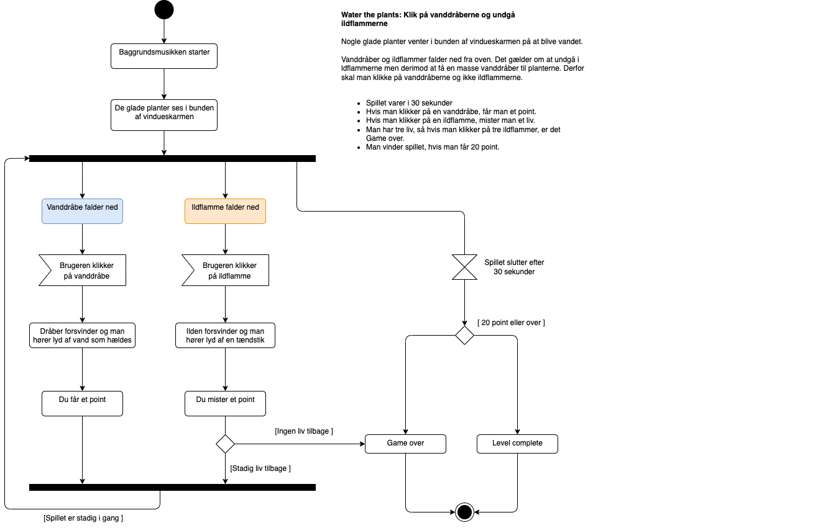
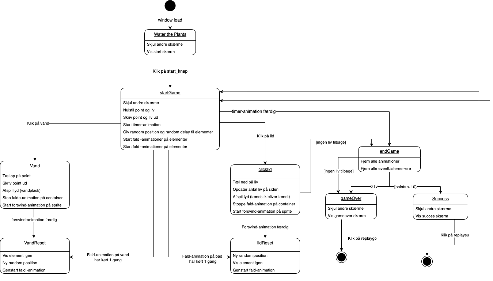

Teknik
Dokumentation af diagrammer

Hvor mange forskellige gode og dårlige ting?
- Der skal være 5 dårlige og 5 gode på skærmen på samme tid
Hvordan bevæger tingene sig?
- Vanddråberne og ildflammerne falder ned for oven (det foregår inde i en vindueskarm). De har ikke bevægelser i sig selv, udover de falder ned.
Hvad sker der når man klikker? (lyde, animationer, point, liv…)
- Når man klikker på en vanddråbe og dermed får pluspoint, kommer der en lyd vand (optager at hælde vand i et glas).
- Når man klikker på en ildflamme og dermed mister et liv, kommer der en lyd ild (optager at tænde en tændstik).
Sker der noget hvis man ikke når at klikke?
- Der sker ikke noget, da karaktererne bare forsvinder ud fra vindueskarmen i bunden.
Hvordan forsvinder ting når man klikker på dem (med hvilken bevægelse/animation)?
- Både vanddråberne og ildflammerne fader ud.
Hvordan du vil vise tid, point og liv?
- De tre liv vil stå i et hjerte
- Tiden vises som en vandkande med fyldt vand i starten af spillet og bliver så gradvist tømt, som tiden går
- Point vil stå i dråbe
Hvordan taber og vinder man spillet (hvor mange point/liv)?
- Man har tre liv, så hvis man klikker på 3 ildflammer, taber man spillet
- Man vinder spillet, hvis man får 10 point (klikker på 10 vanddråber)
Udvidet diagram
